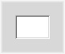

Derived from: public BView
Declared in: DeepBevelView.h
Library: none
In the outermost two pixels of the view's frame, it renders a deep bevel view.

DeepBevelView(BRect frame, const char* name, uint32 resize_mask, uint32 flags)
Creates a view rendering a deep bevel in the outermost two pixels of the frame. Any views can be placed inside.
By Brian Tietz
Copyright 2000
Bug reports (including documentation errors) and feature requests can be sent to briant@timelinevista.com.